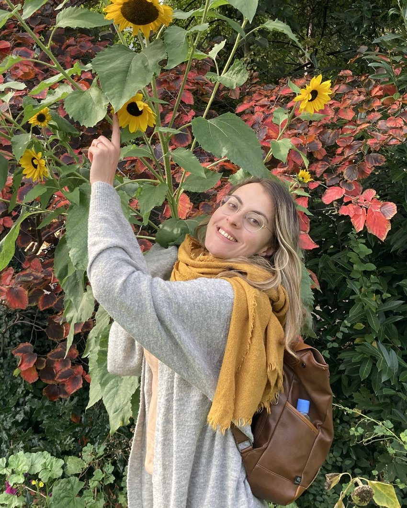

Cycle, périménopause, corps
Notes cliniques — cycle, sommeil, humeur, périménopause — et articles longs sur les transitions hormonales du corps et du cerveau.

Écrits · Projets · Ailleurs
Un espace pour ce que je publie et ce que je construis — articles, notes cliniques, et projets de recherche — plus les liens où je suis disponible ailleurs.
Rien ici ne remplace un échange direct. Ces pages sont un aperçu de ma trajectoire, pas une vitrine.
Notes courtes sur la santé des femmes, la cognition, le sommeil, et la douleur — et quelques articles plus longs, en cours de publication sur Medium.
Notes cliniques — cycle, sommeil, humeur, périménopause — et articles longs sur les transitions hormonales du corps et du cerveau.
Ce que les méta-analyses disent du sommeil, de l'attention, de la régulation émotionnelle — et où les études s'arrêtent.
Comment l'attention modifie l'expérience de la douleur — et ce que cela change pour la pratique clinique.
Ce que « intégratif » recouvre réellement — et ce qu'il ne recouvre pas — sans l'utiliser comme synonyme de « marketing ».
Deux directions de travail qui nourrissent ma pratique clinique — traduire la littérature scientifique pour la rendre accessible, et outiller les chercheurs en analyse comportementale. (Mon parcours complet, études NIH incluses, est sur la page « Mon parcours ».)
Santé des femmes — recherche & data RAG — littérature scientifique sur la santé des femmes
Conception de systèmes de recherche assistés par IA (RAG) pour rendre la littérature scientifique accessible — du cycle et de la fertilité à la périménopause. Ce travail a directement informé ma façon de pratiquer : expliquer d'abord, préciser ensuite.
Science des données & IA Agent d'exploration de données à base de LLM
Conception d'outils d'analyse comportementale — visualisation, détection de signaux faibles, aide à la décision pour les chercheurs. La rigueur méthodologique que ces projets exigent est la même que j'essaie d'appliquer en clinique : des indicateurs clairs, pas des impressions.
Publications longues, projets data, articles en cours. Le lien vers Medium et les réseaux — là où mes écrits apparaissent — sont au-dessus, à côté du portrait.